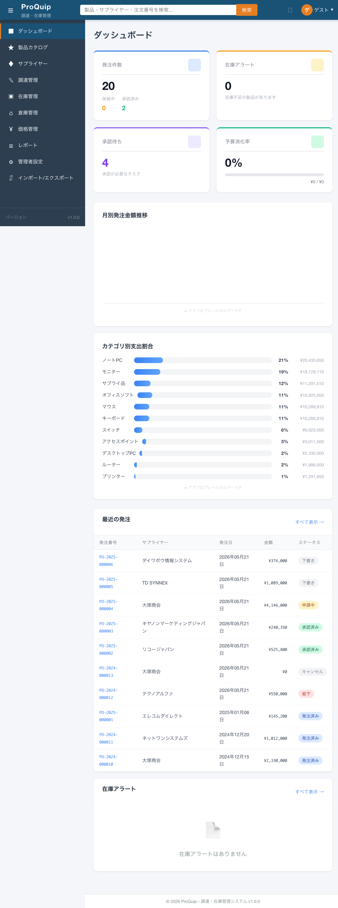

最終更新: 2026-05-22
ダッシュボード画面の全体像。サマリーカード4枚が画面上部に横並びで表示される。
screenshots/F-02/F-02-01_dashboard_initial_phase3.png

全発注書の合計件数と、ステータス別の内訳（保留中・承認済み）を表示するサマリーカード。
調達業務の全体量とステータスの偏りを一目で把握し、対応が必要な発注の有無を即座に判断するため。
| 項目名 | 表示条件 | 値の取得元 | 備考 |
|---|---|---|---|
| カードタイトル「発注件数」 | 常時 | 固定文字列 | |
| 合計件数（メイン値） | 常時 | GET /api/purchase-orders?page=0&size=100 → totalElements | 全ステータスの発注書合計数 |
| 保留中件数 | 常時 | コンポーネント内でstatus=PENDING/PENDING_APPROVALを集計 | |
| 承認済み件数 | 常時 | コンポーネント内でstatus=APPROVEDを集計 |
なし（表示専用）
| 操作名 | トリガー | 実行内容 | 正常時の結果 | 異常時の結果 | 状態変化 |
|---|---|---|---|---|---|
| （なし） | - | - | - | - | カードのクリックイベントは未設定（遷移なし） |
ページロード時にAPIからデータ取得し、合計件数・保留中・承認済み件数を表示する。データ例: 合計20件、保留中0件、承認済み2件。
API取得エラー時は画面上部にエラーバナー「データの取得に失敗しました。再度お試しください。」と「再試行」ボタンを表示。発注件数カードは0で表示される。
フロントエンド・バックエンドともにロールによる表示制御なし。全認証ユーザーに全発注データが表示される。バックエンドDashboardResourceに@RolesAllowed未設定。
ローディング中: ローディングスピナー表示 → データ取得完了後にカード表示。
| API ID | method | path | request | response | error response | 根拠 |
|---|---|---|---|---|---|---|
| - | GET | /api/purchase-orders?page=0&size=100 | page, size | {content: PurchaseOrder[], totalElements: number} | 500 → エラーバナー表示 | Network通信 |
| ファイルパス | 関数/クラス/メソッド名 | 確認内容 |
|---|---|---|
| proquip-frontend/src/app/features/dashboard/dashboard-main/dashboard-main.component.ts | calculateOrderStats() | PENDING/PENDING_APPROVAL→保留中、APPROVED→承認済みの集計 |
| proquip-frontend/src/app/features/dashboard/dashboard-main/dashboard-main.component.html | L20-38 | カードのテンプレート構造 |
| proquip-frontend/src/app/shared/services/purchase-order.service.ts | getOrders() | /api/purchase-orders の呼び出し |
High
在庫不足（発注点以下）の製品数を表示するサマリーカード。クリックすると在庫管理画面に遷移する。
在庫不足の発生を即座に把握し、発注対応の必要性を判断するため。
| 項目名 | 表示条件 | 値の取得元 | 備考 |
|---|---|---|---|
| カードタイトル「在庫アラート」 | 常時 | 固定文字列 | |
| 在庫不足製品数（メイン値） | 常時 | GET /api/inventory/alerts/low-stock → 配列の長さ | 初回はsummary APIから取得、後にlow-stock APIで上書き |
| 説明文「在庫不足の製品があります」 | 常時 | 固定文字列 | 0件でも表示される |
なし（表示専用）
| 操作名 | トリガー | 実行内容 | 正常時の結果 | 異常時の結果 | 状態変化 |
|---|---|---|---|---|---|
| 在庫管理画面へ遷移 | カード全体クリック | router.navigate(['/inventory']) | /inventory に遷移 | - | 画面遷移 |
在庫不足製品数を数値で表示。0件の場合も「0」と表示。アラートがある場合はhas-alertクラスが付与され強調表示。
API取得エラー時はコンソールにエラー出力。カードは0で表示される。
ロールによる表示制御なし。
lowStockCount > 0 の場合、メイン値にhas-alertクラスが付与される（CSSで強調表示）。
| API ID | method | path | request | response | error response | 根拠 |
|---|---|---|---|---|---|---|
| - | GET | /api/dashboard/summary | なし | {lowStockItems: number, ...} | 500 | Network通信 |
| - | GET | /api/inventory/alerts/low-stock | なし | InventoryItem[] | 500 | Network通信 |
| ファイルパス | 関数/クラス/メソッド名 | 確認内容 |
|---|---|---|
| dashboard-main.component.html | L40-53 | カードテンプレート、(click)="navigateToInventory()" |
| dashboard-main.component.ts | navigateToInventory() | router.navigate(['/inventory']) |
High
承認が必要なタスク（発注書承認待ち + 購買依頼承認待ち）の合計件数を表示するサマリーカード。クリックするとマイタスク画面（/dashboard/tasks）に遷移する。
承認待ちの業務タスク数を一目で把握し、承認遅延を防止するため。
| 項目名 | 表示条件 | 値の取得元 | 備考 |
|---|---|---|---|
| カードタイトル「承認待ち」 | 常時 | 固定文字列 | |
| 承認待ち件数（メイン値） | 常時 | summary.pendingApprovals + requisitions(PENDING_APPROVAL).totalElements | 2つのAPI結果を合算 |
| 説明文「承認が必要なタスク」 | 常時 | 固定文字列 |
なし（表示専用）
| 操作名 | トリガー | 実行内容 | 正常時の結果 | 異常時の結果 | 状態変化 |
|---|---|---|---|---|---|
| マイタスク画面へ遷移 | カード全体クリック | router.navigate(['/dashboard', 'tasks']) | /dashboard/tasks に遷移 | - | 画面遷移 |
承認待ち件数を表示。画面確認では4件表示（summary APIのpendingApprovals=4に、requisitionsのPENDING_APPROVAL件数を加算）。pendingApprovals > 0の場合、has-pendingクラスで強調表示。
API取得エラー時はコンソールにエラー出力。件数は0のまま。
ロールによる表示制御なし。全ユーザーに全承認待ちの合計が表示される（自分に割り当てられた承認のみではない）。
pendingApprovals > 0 の場合、has-pendingクラス付与。
| API ID | method | path | request | response | error response | 根拠 |
|---|---|---|---|---|---|---|
| - | GET | /api/dashboard/summary | なし | {pendingApprovals: number, ...} | 500 | Network通信 |
| - | GET | /api/requisitions?page=0&size=100&status=PENDING_APPROVAL | page, size, status | {totalElements: number, content: []} | 500 | Network通信 |
| ファイルパス | 関数/クラス/メソッド名 | 確認内容 |
|---|---|---|
| dashboard-main.component.html | L55-68 | カードテンプレート、(click)="navigateToTasks()" |
| dashboard-main.component.ts | loadDashboardSummary() L152-154 | pendingApprovals = summary値 + requisitions.totalElements |
| dashboard-main.component.ts | navigateToTasks() | router.navigate(['/dashboard', 'tasks']) |
High
当年度の予算消化率をパーセント表示し、プログレスバーで視覚化するサマリーカード。消化済み金額と予算総額の内訳も表示する。
予算の使用状況を即座に把握し、予算超過を未然に防ぐため。
| 項目名 | 表示条件 | 値の取得元 | 備考 |
|---|---|---|---|
| カードタイトル「予算消化率」 | 常時 | 固定文字列 | |
| 消化率パーセント（メイン値） | 常時 | コンポーネント内で計算: round((usedAmount合計 / totalAmount合計) * 100) | 予算未登録時は0% |
| プログレスバー | 常時 | budgetUtilization値をwidthに反映 | 80%超:警告色, 95%超:危険色 |
| 金額内訳「¥X / ¥Y」 | 常時 | budgetSpent / budgetTotal | formatCurrency()で¥カンマ区切り |
なし（表示専用）
| 操作名 | トリガー | 実行内容 | 正常時の結果 | 異常時の結果 | 状態変化 |
|---|---|---|---|---|---|
| （なし） | - | - | - | - | カードのクリックイベントは未設定 |
当年度（2026年）の予算データを取得し消化率を計算・表示。テスト環境では予算データなし（0% / ¥0 / ¥0）。
API取得エラー時はコンソールにエラー出力。消化率は0%のまま。
ロールによる表示制御なし。
| API ID | method | path | request | response | error response | 根拠 |
|---|---|---|---|---|---|---|
| - | GET | /api/budgets?fiscalYear=2026 | fiscalYear | Budget[]（totalAmount, usedAmount含む） | 500 | Network通信 |
| ファイルパス | 関数/クラス/メソッド名 | 確認内容 |
|---|---|---|
| dashboard-main.component.html | L70-88 | カードテンプレート、プログレスバー、警告/危険クラス |
| dashboard-main.component.ts | calculateBudgetUtilization() | 予算合計・使用合計からパーセント計算 |
| dashboard-main.component.ts | loadDashboardSummary() L147 | budgetService.getBudgets(2026)呼び出し（会計年度ハードコード） |
High
過去12か月間の月別発注金額推移をdiv要素による擬似棒グラフで表示するチャートエリア。現在はプレースホルダー実装。
発注金額の月次推移を把握し、支出の季節変動や異常値を検出するため。
| 項目名 | 表示条件 | 値の取得元 | 備考 |
|---|---|---|---|
| セクションタイトル「月別発注金額推移」 | 常時 | 固定文字列 | |
| 棒グラフ | monthlySpendingData配列に要素がある場合 | GET /api/dashboard/spending-trend?months=12 | div要素で棒グラフを擬似的に表現 |
| 月ラベル | データがある場合 | spending-trend.month（YYYY-MM形式）から月部分を抽出 | |
| 注記「※ グラフはプレースホルダーです」 | 常時 | 固定文字列 |
なし（表示専用）
操作なし（ホバー時にtitleで月と金額が表示される）。
テスト環境ではデータが空配列のため棒グラフは表示されず、注記のみ表示。データがある場合、各月の金額に比例した高さの棒グラフが表示される（最大値を200pxとして比率計算）。
API取得エラー時はコンソールにエラー出力。グラフエリアは空のまま注記のみ表示。
ロールによる表示制御なし。
なし。
| API ID | method | path | request | response | error response | 根拠 |
|---|---|---|---|---|---|---|
| - | GET | /api/dashboard/spending-trend?months=12 | months (default: 12) | [{month: "YYYY-MM", amount: number}] | 500 | Network通信 |
| ファイルパス | 関数/クラス/メソッド名 | 確認内容 |
|---|---|---|
| dashboard-main.component.html | L92-109 | 棒グラフテンプレート（div擬似グラフ） |
| dashboard-main.component.ts | getBarHeight() | 最大値比で高さ計算（max200px） |
| dashboard-main.component.ts | loadDashboardSummary() L95-105 | spending-trend APIの呼び出しとデータ変換 |
| DashboardResource.java | getSpendingTrend() | PostgreSQLネイティブSQL（月別GROUP BY） |
Medium（データなしのためグラフ表示の実際の見た目は未確認）
カテゴリごとの支出金額と割合をリスト形式（水平バー + パーセント + 金額）で表示するチャートエリア。円グラフのプレースホルダー実装。
支出のカテゴリ別構成比を把握し、調達戦略やコスト削減の対象カテゴリを判断するため。
| 項目名 | 表示条件 | 値の取得元 | 備考 |
|---|---|---|---|
| セクションタイトル「カテゴリ別支出割合」 | 常時 | 固定文字列 | |
| カテゴリ名 | データがある場合 | category-spending.categoryName | |
| 水平バー | データがある場合 | percentage値をwidthに反映 | |
| パーセント表示 | データがある場合 | コンポーネント内で計算: round((item.totalAmount / 全体合計) * 100) | |
| 金額 | データがある場合 | category-spending.totalAmount → formatCurrency() | ¥カンマ区切り |
| 注記「※ グラフはプレースホルダーです」 | 常時 | 固定文字列 |
なし（表示専用）
操作なし。
11カテゴリが表示される。上位：ノートPC 21% ¥20,433,650、モニター 19% ¥18,129,110、サプライ品 12% ¥11,291,510 等。パーセントの合計は四捨五入の都合で100%にならない場合がある。
API取得エラー時はコンソールにエラー出力。カテゴリリストは空のまま。
ロールによる表示制御なし。
なし。
| API ID | method | path | request | response | error response | 根拠 |
|---|---|---|---|---|---|---|
| - | GET | /api/dashboard/category-spending | なし | [{categoryName, orderCount, totalAmount}] | 500 | Network通信 |
| ファイルパス | 関数/クラス/メソッド名 | 確認内容 |
|---|---|---|
| dashboard-main.component.html | L111-129 | カテゴリリストテンプレート |
| dashboard-main.component.ts | loadDashboardSummary() L108-121 | category-spending APIの呼び出しとパーセント計算 |
| DashboardResource.java | getCategorySpending() | JPQL: PurchaseOrder→items→product→category JOIN |
High
最近の発注書を発注日降順で上位10件表示するテーブル。各行をクリックすると発注書詳細画面に遷移する。
最新の発注状況を一覧で確認し、ステータス変化を追跡するため。
| 項目名 | 表示条件 | 値の取得元 | 備考 |
|---|---|---|---|
| セクションタイトル「最近の発注」 | 常時 | 固定文字列 | |
| 発注番号 | データがある場合 | order.orderNumber | 例: PO-2025-000006 |
| サプライヤー | データがある場合 | order.supplierName | |
| 発注日 | データがある場合 | order.orderDate → formatDate() | 「YYYY年MM月DD日」形式（手動フォーマット、技術的負債#6） |
| 金額 | データがある場合 | order.totalAmount → formatCurrency() | 「¥X,XXX,XXX」形式 |
| ステータス | データがある場合 | order.status → getStatusLabel() | status-tagクラス + ステータス別CSSクラス |
| 空状態メッセージ「最近の発注はありません」 | 発注データがない場合 | app-empty-stateコンポーネント |
なし（表示専用）
| 操作名 | トリガー | 実行内容 | 正常時の結果 | 異常時の結果 | 状態変化 |
|---|---|---|---|---|---|
| 発注詳細画面へ遷移 | テーブル行クリック | router.navigate(['/procurement', 'orders', order.id]) | /procurement/orders/:id に遷移 | - | 画面遷移 |
発注書を発注日降順でソートし、上位10件を表示。表示確認: PO-2025-000006（下書き）、PO-2025-000005（下書き）、PO-2025-000004（申請中）、PO-2025-000003（承認済み）、PO-2025-000002（承認済み）、PO-2024-000013（キャンセル）、PO-2024-000012（却下）、PO-2025-000001（発注済み）、PO-2024-000011（発注済み）、PO-2024-000010（発注済み）。
データがない場合: app-empty-stateで「最近の発注はありません」を表示。API取得エラー時はコンソールにエラー出力。
ロールによる表示制御なし。全ユーザーに全発注書が表示される。
行のホバー時にclickable-rowクラスによりカーソル変化。
| API ID | method | path | request | response | error response | 根拠 |
|---|---|---|---|---|---|---|
| - | GET | /api/purchase-orders?page=0&size=100 | page, size | {content: PurchaseOrder[], totalElements: number} | 500 | Network通信 |
| ファイルパス | 関数/クラス/メソッド名 | 確認内容 |
|---|---|---|
| dashboard-main.component.html | L132-171 | テーブルテンプレート |
| dashboard-main.component.ts | loadDashboardSummary() L136-138 | 発注日降順ソート、上位10件スライス |
| dashboard-main.component.ts | navigateToOrder() | 発注詳細画面遷移 |
| dashboard-main.component.ts | formatDate(), formatCurrency(), getStatusLabel(), getStatusClass() | 各列のフォーマッター |
High
「最近の発注」セクションのヘッダー右側に表示されるリンク。発注書一覧画面へ遷移する。
ダッシュボードに表示しきれない全発注書の一覧を確認するためのナビゲーション。
| 項目名 | 表示条件 | 値の取得元 | 備考 |
|---|---|---|---|
| リンクテキスト「すべて表示 →」 | 常時 | 固定文字列 |
なし
| 操作名 | トリガー | 実行内容 | 正常時の結果 | 異常時の結果 | 状態変化 |
|---|---|---|---|---|---|
| 発注書一覧画面へ遷移 | リンククリック | routerLink="/procurement/orders" | /procurement/orders に遷移 | - | 画面遷移 |
クリックすると発注書一覧画面（F-05-03）に遷移する。
なし。
ロールによる表示制御なし。
なし。
なし（画面遷移のみ）。
| ファイルパス | 関数/クラス/メソッド名 | 確認内容 |
|---|---|---|
| dashboard-main.component.html | L137 | <a class="link-more" routerLink="/procurement/orders">すべて表示 →</a> |
High
在庫不足（発注点以下）の製品をリスト表示するパネル。各製品の名前、SKU、現在在庫数、最低在庫数、在庫バーを表示する。各項目クリックで製品詳細画面に遷移する。
在庫不足の製品を具体的に把握し、発注アクションにつなげるため。
| 項目名 | 表示条件 | 値の取得元 | 備考 |
|---|---|---|---|
| セクションタイトル「在庫アラート」 | 常時 | 固定文字列 | |
| 製品名 | アラートデータがある場合 | item.productName | |
| 製品SKU | アラートデータがある場合 | item.productSku | |
| 現在在庫数「現在: X」 | アラートデータがある場合 | item.quantity, item.status | |
| 最低在庫数「最低: X」 | アラートデータがある場合 | item.minimumStock | |
| 在庫バー | アラートデータがある場合 | (quantity / minimumStock) * 100 | criticalとwarningのCSS切替あり |
| 空状態メッセージ「在庫アラートはありません」 | アラートデータがない場合 | app-empty-stateコンポーネント | テスト環境ではこの状態 |
なし（表示専用）
| 操作名 | トリガー | 実行内容 | 正常時の結果 | 異常時の結果 | 状態変化 |
|---|---|---|---|---|---|
| 製品詳細画面へ遷移 | アラート項目クリック | router.navigate(['/products', item.productId]) | /products/:id に遷移 | - | 画面遷移 |
在庫不足製品がない場合: 「在庫アラートはありません」と表示（テスト環境で確認済み）。在庫不足製品がある場合: 製品名・SKU・現在/最低在庫数・在庫バーのリストを表示。
API取得エラー時はコンソールにエラー出力。空状態表示のまま。
ロールによる表示制御なし。
| API ID | method | path | request | response | error response | 根拠 |
|---|---|---|---|---|---|---|
| - | GET | /api/inventory/alerts/low-stock | なし | InventoryItem[]（productId, productName, productSku, quantity, minimumStock, status含む） | 500 | Network通信 |
| ファイルパス | 関数/クラス/メソッド名 | 確認内容 |
|---|---|---|
| dashboard-main.component.html | L174-211 | アラートリストテンプレート（在庫バー、critical/warning判定） |
| dashboard-main.component.ts | navigateToProduct() | router.navigate(['/products', productId]) |
| dashboard-main.component.ts | loadDashboardSummary() L141-144 | lowStockItems/lowStockCount設定 |
Medium（在庫不足データがないため、リスト表示時の見た目・在庫バーの表示は未確認）
「在庫アラート」セクションのヘッダー右側に表示されるリンク。在庫管理画面へ遷移する。
在庫管理画面へのショートカット。全在庫状況を確認するためのナビゲーション。
| 項目名 | 表示条件 | 値の取得元 | 備考 |
|---|---|---|---|
| リンクテキスト「すべて表示 →」 | 常時 | 固定文字列 |
なし
| 操作名 | トリガー | 実行内容 | 正常時の結果 | 異常時の結果 | 状態変化 |
|---|---|---|---|---|---|
| 在庫管理画面へ遷移 | リンククリック | routerLink="/inventory" | /inventory に遷移 | - | 画面遷移 |
クリックすると在庫管理画面（F-06-01）に遷移する。
なし。
ロールによる表示制御なし。
なし。
なし（画面遷移のみ）。
| ファイルパス | 関数/クラス/メソッド名 | 確認内容 |
|---|---|---|
| dashboard-main.component.html | L177 | <a class="link-more" routerLink="/inventory">すべて表示 →</a> |
High